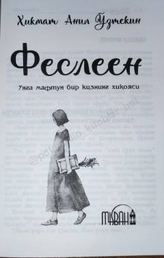

FInsoniy tuyg'ular va hayot falsafasiga bag'ishlangan ta'sirli asar.
Ushbu asar insoniy tuyg'ular, sevgi va hayotiy falsafalar haqida hikoya qiladi. Muallif Hikmat Anil O'ztekin o'zining o'ziga xos uslubi bilan kitobxonni hayot mazmuni va insoniy uyg'onish haqida fikr yuritishga chorlaydi.